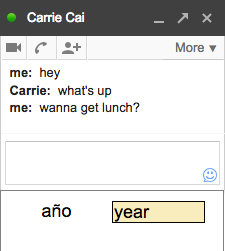

WaitChatter is a Chrome extension for Gchat that delights you with interactive vocabulary exercises while you're waiting for your conversation partner to respond.
1. If you have Google Hangouts enabled, revert to Google Chat by following steps 2-4 on this page. (You can un-revert back to Hangouts at anytime.)
2. Download the Chrome extension and refresh Gmail. Your chatboxes should now display a learning panel. Try an exercise!
3. Track your progress by clicking on the globe icon in your Chrome browser on the right end of the URL box.
Wait-Learning
People often want to learn a language but can't find time. WaitChatter is based on the idea of wait-learning: make use of micro-moments when you're waiting for your IM buddy to respond, to teach you a foreign language.
Publications
WaitChatter was built by Carrie Cai and is part of ongoing research in the User Interface Design group at MIT CSAIL. Read more about WaitChatter in our published papers on wait-learning here and here.
Contact
Please email waitchatter@csail.mit.edu with any questions or concerns. If you would like to be informed of future improvements to WaitChatter, sign up here:
WaitChatter isn't appearing under my chatbox.
1) Are you currently using Google Hangout?
To use WaitChatter, revert to GChat in two simple steps. etc.
2) Do you have chat-related Google Labs items?
Using a Google Labs items that changes the appearance of your Gchat could interfere with WaitChatter appearing correctly.
What language does WaitChatter teach?
WaitChatter currently teaches basic vocabulary in Spanish and French, but we hope to support other languages in the future.
What information does WaitChatter access?
For your privacy, this public version of WaitChatter does not pull any vocabulary words from your chat conversations, and does not log any content from your chats. It does track how many times you answer the learning exercises and what vocabulary words you have answered correctly so that it can select the best word to quiz you on next.
This site was built by Anji Ren and Carrie Cai.